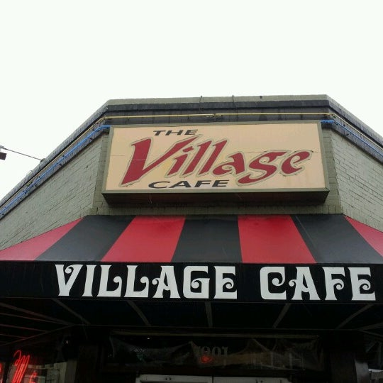

Richmond, Virginia is one of the oldest cities in the U.S. Its ever changing landscape has created a blend of modern and historical vibes.
Located on Grace Street in the heart of VCU, The Village is known nationally as a place to go when visiting Richmond. This simple diner has a large selection of great dishes ranging from full size subs, to pasta dishes, to delicious sandwiches. Open and serving for breakfast, lunch, dinner, and brunch.
Facebook Page Known for its fine dinning, Lemaire Restaurant is one of the top restaurants in Richmond. It is apart of the world known The Jefferson Hotel, a 5 star hotel according to Forbes. Guest and patrons can experience exquisit and expensive dishes along with beautifly crafted cocktails and exotic wines. If you're looking for a taste of the upper class, Lamire is the place for you.
Website